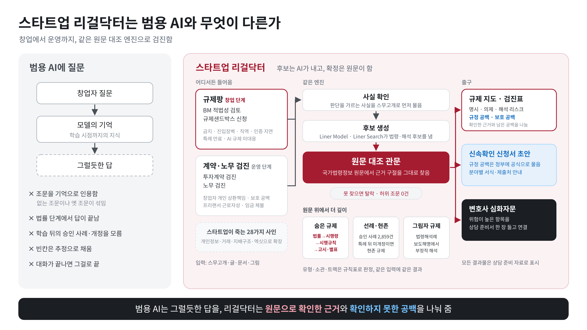

법을 잘 모르는 창업자가 변호사를 찾기 전에 무료로 쓰는 규제·법률 사전상담 에이전트임. 스타트업이 죽는 28가지 사인을 죽기 전에 검진하고, 15년 창업 법률 현장의 판단 순서와 권장조치를 그대로 담음.
개발자가 15년간 스타트업 창업진흥 변호사로 상담하며 가장 자주 부딪힌 병목임. 창업자는 무엇을 물어야 할지 모른 채 상담에 오고, 변호사는 매번 기초 조사부터 다시 함.
| 누가 | 법무 인력이 없는 초기 창업자. 신사업을 준비하거나 투자·채용을 앞둔 단계 |
| 얼마나 | 변호사 첫 답까지 보통 1주. 공공 지원(창업진흥원 스타트업법률지원)은 상담 1건 100만 원이고 충분한 규제 검토에 2~3건(200~300만 원)이 듦. 시장가는 1,000만 원 안팎(중대형 로펌 기준). 상담 시간의 70%가 사실관계 파악과 기초 조사에 쓰임 |
| 놓쳤을 때 | 출시 뒤 규제 위반으로 사업 중단, 샌드박스로 풀 수 있었던 사업 포기, 계약 한 줄로 대표 개인이 투자금 상환 |
모델은 후보만 내고 확정은 국가법령정보 원문이 함. 원문에서 근거 구절을 그대로 찾지 못한 판정은 버려 허위 조문이 결과물에 들어가지 않음.

| 접수 | 스무고개 문답, 글, 사업소개서·계약서(PDF·PPTX·DOCX·HWPX), 손그림. 이해한 사업 모델 12개 항목마다 출처 자료를 붙임 |
| 규제팡 | 판단 점검표 6단계: 사업 분해 → 5층 규제 탐색(정의 대조·위임 사슬·의제 가설·법령해석례·선례) → 규제 유형 → 소관 → 선례·현존 규제 → 트랙(신속확인·실증특례·임시허가)과 창구 |
| 계약·노무 검진 | 투자계약(창업자 개인 책임, 보호 공백)과 노무(근로자성, 체불, 포괄임금, 직무발명)의 위험 조항을 원문 그대로 뽑아 법령과 대조 |
| 결과물 | 규제 지도, 신속확인 신청서 초안(ICT·산업융합·규제자유특구 서식), 변호사 상담 준비서(A4 1장), 검진표 |
| 출구 | 규정 공백은 신속확인으로 정부에 묻고, 깊은 검토는 상담 준비서를 들고 이용자가 고른 변호사에게 감 |
판정은 명시 규제·의제 리스크·해석 리스크·규정 공백·원문 확인 불가로 나누고, 특례 뒤 개정되지 않은 규정은 현존 규제로 표시함(개정 이력만으로 해소를 단정하지 않음). 유형·소관·트랙은 규칙표로 판정해 재현됨.
사업 설명만 넣고 승인 결과와 대조함. 평가 세트 10건과 규칙을 고칠 때 보지 않은 검증 세트 10건을 합친 값임. 입력에서 법령명·조문·특례 결과를 지우고, 같은 사례와 그 뒤 승인 사례는 선례 검색에서 뺌. 비교 대상은 같은 Liner Model에 범용 프롬프트로 물은 결과임(2026.11.14 실행).
| 항목 | 리걸닥터 | 범용 |
|---|---|---|
| 핵심 법령 적중(시행령·시행규칙 포함) | 76% | 68% |
| 핵심 법령 적중(정확한 법령명) | 73% | 53% |
| 조문 적중 | 48% | 25% |
| 허위 조문 | 0건 | 5건 |
| 항목 | 리걸닥터 | 범용 |
|---|---|---|
| 트랙 일치 | 14/20 | 16/20 |
| 창구 일치 | 10/20 | 15/20 |
| 평균 소요 | 114초 | 5초 |
| 검증 세트만 보면 법령 계열 67% 대 57%, 조문 46% 대 25%. 트랙·창구 판정과 속도는 개선 과제임 | ||
Liner Model(liner-mark-1.0)은 글·문서·그림에서 사업 모델 추출, 스무고개 질문, 사업 분해, 후보 법령·의제 가설, 원문 조문 적용 판정(근거 구절 필수), 계약 위험 조항 추출을 맡음. Liner Search는 행위별 규제 단서와 정부 해석·보도해명을 찾음. 둘 다 후보만 내고 확정은 국가법령정보 원문이 함. 진단 1건 Liner Model 비용은 약 $0.24~0.34(2026.11.14 실측), 같은 질문은 판정 캐시로 다시 부르지 않음.
| 구분 | 법제처 AI 법령검색 | 앨리비(BHSN) | 스타트업 리걸닥터 |
|---|---|---|---|
| 답하는 질문 | "이 법을 찾아 줘"(법령 검색) | "이 계약서를 관리·검토해 줘"(기업 계약 업무) | "내 사업이 무엇 때문에 죽을 수 있나"(물을 것을 모르는 창업자) |
| 출발점 | 이용자의 질문 | 계약서 | 사업 설명·그림·스무고개로 사실을 먼저 확인 |
| 고유 자산 | 법령·판례·해석례 데이터 | 계약 관리·전자서명·법률 특화 모델 | 샌드박스 사례 2,859건과 특례 뒤 현존 규제 판정, 28개 사인 진단 사슬, 15년 현장의 판단 순서·변호사 권장조치 |
| 다음 길 | 법령 열람 | 계약 체결·이행 관리 | 신속확인 신청서 초안, 트랙·창구 판정, 변호사 상담 준비서 |
법제처는 지능형 법령검색을 2024.12 개통하고 생성형 AI 법령검색을 2027년 제공 예정(2026.6 착수), 앨리비는 2026.7부터 계약 기본 기능을 무료 제공(각 기관·언론 공개 자료, 2026.11 확인). 리걸닥터는 이들과 경쟁하기보다 그 앞단, 창업자가 무엇을 물어야 할지 정해 주는 자리를 맡음.
| 조직·직무 | 쓰는 방식 | 줄어드는 시간·비용 |
|---|---|---|
| 창업자 | 변호사를 찾기 전 무료 사전검진, 신속확인 신청 | 첫 답 1주 → 1~2분, 자문료 100만~1,000만 원 → 진단 1건 약 350원 |
| 변호사·변리사 | 상담 준비서로 심층상담 시작 | 상담 1건 기초 조사 보통 8시간 → 약 2분 |
| 액셀러레이터·VC | 투자 전 규제·계약 리스크 선별, 포트폴리오 정기 검진 | 실사 선행 조사, 투자계약 검진 1건 약 30초 |
| 기업 법무팀 | 신사업 출시 전 내부 검토 | 외부 자문 전 쟁점 정리 |
| 샌드박스 사무국·지자체 | 신속확인·민원 접수 전 조문·선례 정리, 현존 규제 목록으로 규제 개선 과제 발굴 | 회신 전 조사 시간 |
개발자는 현직 변호사이므로 서비스를 수임 통로로 쓰지 않음. 서비스 안에서 변호사 소개나 자문 권유를 하지 않고, 입력 자료는 저장하지 않아(메모리 6시간) 운영자나 변호사가 열람하지 않음. 그래서 이용자의 상대방이 다른 의뢰인이어도 비밀정보가 변호사에게 흘러가지 않음. 결과물의 "변호사 권장조치"는 같은 유형에 일반적으로 권하는 조치이며, 이용약관에 위임이나 변호사와 의뢰인 관계가 생기지 않는다고 밝힘. 소속 법인 업무와 분리한 개인 비영리 프로젝트로 운영하고, 나중에 유료 상담을 붙이면 수임 전 이해충돌 확인 절차를 거침.
코드와 데이터는 모두 대회 기간(2026.11.12~11.25)에 새 저장소에서 작성함. 기존 저작물은 검진 메뉴의 사인 분류와 진단 사슬뿐이며 참가자가 집필해 온 「스타트업 부검보고서」의 28가지 사인 체계를 옮긴 것임(원고 본문·사례 미포함). 데이터는 법령 원문, 공개 샌드박스 승인 사례, 가상 시연 자료만 씀.
구태언. 1995년부터 검사와 기업 변호사로 31년간 법조에서 일했고 24년간 IT 분야, 15년간 스타트업 창업진흥 변호사로 활동함. 대한변협 공인 IT전문 변호사이며 국내 대형로펌 파트너 변호사이자 AI산업 자문그룹 대표. 코리아스타트업포럼 공동창립자(2016년 출범 때 운영위원, 2018년 사단법인 이사), 부의장(2024~2026), 현 이사 겸 운영위원. 2021년 대통령표창(벤처창업진흥유공).